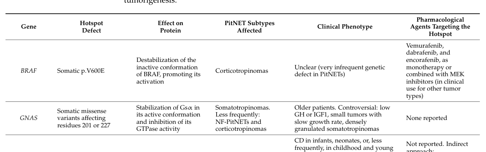

GNAS-related pituitary adenoma 3 represents growth hormone-secreting pituitary tumors driven by somatic activating GNAS mutations. Mechanistically, GNAS is more similar to GPR101 than to AIP: it enters the shared somatotroph cAMP/PKA module by constitutive Gs-alpha activation and increased adenylyl cyclase/cAMP activity rather than by biallelic tumor-suppressor loss.
Ask a research question about GNAS-related pituitary adenoma 3. OpenScientist will conduct autonomous deep research using the Disorder Mechanisms Knowledge Base and PubMed literature (typically 10-30 minutes).
Do not include personal health information in your question. Questions and results are cached in your browser's local storage.
name: GNAS-related pituitary adenoma 3
creation_date: "2026-06-03T00:00:00Z"
category: Neoplastic
categories:
- Endocrine Neoplasia
- Somatic Mosaicism
parents:
- pituitary gland adenoma
disease_term:
preferred_term: GNAS-related pituitary adenoma 3
synonyms:
- Pituitary adenoma 3
- gsp-positive somatotroph adenoma
- GNAS-mutant growth hormone-secreting pituitary tumor
mappings:
mondo_mappings:
- term:
id: MONDO:0006373
label: pituitary gland adenoma
mapping_predicate: skos:closeMatch
mapping_source: MONDO
mapping_justification: >-
Closest available MONDO grouping term for somatic GNAS-driven pituitary
adenoma; a gene-specific PITA3 term is not represented in the local
ontology snapshot.
description: >-
GNAS-related pituitary adenoma 3 represents growth hormone-secreting
pituitary tumors driven by somatic activating GNAS mutations. Mechanistically,
GNAS is more similar to GPR101 than to AIP: it enters the shared somatotroph
cAMP/PKA module by constitutive Gs-alpha activation and increased adenylyl
cyclase/cAMP activity rather than by biallelic tumor-suppressor loss.
references:
- reference: PMID:2124121
title: "GTPase-inhibiting mutations activate the alpha-chain of Gs in human tumours."
findings:
- statement: >-
GH-secreting pituitary tumors can carry GNAS mutations that inhibit
intrinsic GTPase activity, stabilize Gs-alpha in an active conformation,
and associate with elevated GH secretion, cAMP, and adenylyl cyclase
activity.
- reference: PMID:25356808
title: "Acromegaly: an endocrine society clinical practice guideline."
findings:
- statement: >-
Acromegaly management uses biochemical assessment and multimodal therapy,
including medical monotherapy or combination therapy.
- reference: PMID:27812777
title: "Acromegaly: clinical features at diagnosis."
findings:
- statement: >-
Acromegaly produces somatic overgrowth and typical facial and acral
overgrowth phenotypes downstream of GH/IGF-1 excess.
- reference: PMID:34638340
title: "gsp Mutation Is Not a Molecular Biomarker of Long-Term Response to First-Generation Somatostatin Receptor Ligands in Acromegaly."
findings:
- statement: >-
In a 136-patient series, gsp/GNAS status was not a reliable biomarker of
long-term first-generation somatostatin receptor ligand response.
- reference: PMID:31673695
title: "Fibrous Dysplasia/McCune-Albright Syndrome: A Rare, Mosaic Disease of Gα s Activation."
findings:
- statement: >-
McCune-Albright syndrome/fibrous dysplasia is a somatic mosaic
gain-of-function GNAS disorder, distinct from the usual sporadic
tumor-somatic GNAS context modeled here.
- reference: PMID:18489744
title: "McCune-Albright syndrome."
findings:
- statement: >-
McCune-Albright syndrome can include growth hormone excess among its
hyperfunctioning endocrinopathies.
genetic:
- name: GNAS
gene_term:
preferred_term: GNAS
term:
id: hgnc:4392
label: GNAS
relationship_type: SOMATIC_DRIVER
variant_origin: SOMATIC
association: >-
Somatic activating GNAS mutations act as gsp oncogenic drivers in a subset
of growth hormone-secreting pituitary tumors.
evidence:
- reference: PMID:2124121
reference_title: "GTPase-inhibiting mutations activate the alpha-chain of Gs in human tumours."
supports: SUPPORT
evidence_source: HUMAN_CLINICAL
snippet: >-
A subset of human growth hormone (GH)-secreting pituitary tumours,
characterized by elevated GH secretion, cyclic AMP levels, and adenylyl
cyclase activity, carries mutations in the gene that encodes the
alpha-chain of Gs.
explanation: >-
This identifies GNAS mutation as the driver alteration in a subset of
GH-secreting pituitary tumors.
pathophysiology:
- name: Somatic activating GNAS mutation
description: >-
A somatic GNAS missense mutation inhibits intrinsic GTPase activity of
Gs-alpha, stabilizing the protein in its active conformation.
role: trigger
gene:
preferred_term: GNAS
modifier: INCREASED
term:
id: hgnc:4392
label: GNAS
genetic_context:
gene:
preferred_term: GNAS
term:
id: hgnc:4392
label: GNAS
variant_origin: SOMATIC
allelic_events:
- MISSENSE_VARIANT
functional_impact_category: GAIN_OF_FUNCTION
description: >-
Somatic GNAS substitutions at residues such as Arg-201 or Gln-227 inhibit
GTP hydrolysis and keep Gs-alpha active.
molecular_functions:
- preferred_term: GNAS intrinsic GTPase activity
modifier: DECREASED
term:
id: GO:0003924
label: GTPase activity
locations:
- preferred_term: pituitary gland
term:
id: UBERON:0000007
label: pituitary gland
evidence:
- reference: PMID:2124121
reference_title: "GTPase-inhibiting mutations activate the alpha-chain of Gs in human tumours."
supports: SUPPORT
evidence_source: HUMAN_CLINICAL
snippet: >-
By substitution of a single amino acid (Arg-201 or Gln-227), these
mutations inhibit the intrinsic GTPase activity of alpha s, thus
stabilizing the protein in its active conformation.
explanation: >-
This directly supports the proximal biochemical effect of the activating
GNAS mutations.
downstream:
- target: Constitutive Gs-alpha adenylate cyclase activation
description: >-
Active Gs-alpha stimulates adenylyl cyclase and increases cAMP production.
causal_link_type: DIRECT
- name: Constitutive Gs-alpha adenylate cyclase activation
description: >-
Active Gs-alpha increases adenylyl cyclase activity and intracellular cAMP
levels in GH-secreting pituitary tumor cells.
role: upstream_effector
cell_types:
- preferred_term: somatotroph
term:
id: CL:0002312
label: somatotroph
gene:
preferred_term: GNAS
modifier: INCREASED
term:
id: hgnc:4392
label: GNAS
molecular_functions:
- preferred_term: adenylate cyclase activator activity
modifier: INCREASED
term:
id: GO:0010856
label: adenylate cyclase activator activity
biological_processes:
- preferred_term: cAMP biosynthetic process
modifier: INCREASED
term:
id: GO:0006171
label: cAMP biosynthetic process
evidence:
- reference: PMID:2124121
reference_title: "GTPase-inhibiting mutations activate the alpha-chain of Gs in human tumours."
supports: SUPPORT
evidence_source: HUMAN_CLINICAL
snippet: >-
A subset of human growth hormone (GH)-secreting pituitary tumours,
characterized by elevated GH secretion, cyclic AMP levels, and adenylyl
cyclase activity, carries mutations in the gene that encodes the
alpha-chain of Gs.
explanation: >-
This supports increased adenylyl cyclase and cAMP as the biochemical
state downstream of GNAS mutation.
downstream:
- target: Increased cAMP/PKA signaling in somatotrophs
description: >-
Increased cAMP availability activates the shared somatotroph cAMP/PKA
module.
causal_link_type: DIRECT
- name: Increased cAMP/PKA signaling in somatotrophs
conforms_to: somatotroph_camp_pka_overactivation#Increased cAMP/PKA signaling in somatotrophs
description: >-
GNAS-mutant somatotroph tumors converge on the same cAMP/PKA signaling
cassette reached by GPR101 activation and by AIP loss through reduced
cAMP-degrading restraint.
role: central_effector
cell_types:
- preferred_term: somatotroph
term:
id: CL:0002312
label: somatotroph
biological_processes:
- preferred_term: cAMP/PKA signal transduction
modifier: INCREASED
term:
id: GO:0141156
label: cAMP/PKA signal transduction
evidence:
- reference: PMID:2124121
reference_title: "GTPase-inhibiting mutations activate the alpha-chain of Gs in human tumours."
supports: SUPPORT
evidence_source: HUMAN_CLINICAL
snippet: >-
A subset of human growth hormone (GH)-secreting pituitary tumours,
characterized by elevated GH secretion, cyclic AMP levels, and adenylyl
cyclase activity, carries mutations in the gene that encodes the
alpha-chain of Gs.
explanation: >-
This supports cAMP pathway activation in GNAS-mutant GH-secreting tumors.
downstream:
- target: Increased growth hormone secretion
description: >-
cAMP/PKA signaling drives excess GH secretion.
causal_link_type: DIRECT
- target: Somatotroph adenoma growth
description: >-
cAMP-responsive somatotroph cells proliferate in the presence of
oncogenic Gs-alpha signaling.
causal_link_type: DIRECT
- name: Increased growth hormone secretion
conforms_to: somatotroph_camp_pka_overactivation#Increased growth hormone secretion
description: >-
GNAS-mutant GH-secreting pituitary tumors show elevated growth hormone
secretion downstream of cAMP pathway activation.
role: consequence
cell_types:
- preferred_term: somatotroph
term:
id: CL:0002312
label: somatotroph
biological_processes:
- preferred_term: growth hormone secretion
modifier: INCREASED
term:
id: GO:0030252
label: growth hormone secretion
evidence:
- reference: PMID:2124121
reference_title: "GTPase-inhibiting mutations activate the alpha-chain of Gs in human tumours."
supports: SUPPORT
evidence_source: HUMAN_CLINICAL
snippet: >-
A subset of human growth hormone (GH)-secreting pituitary tumours,
characterized by elevated GH secretion, cyclic AMP levels, and adenylyl
cyclase activity, carries mutations in the gene that encodes the
alpha-chain of Gs.
explanation: >-
This directly links GNAS-mutant pituitary tumors with elevated GH
secretion.
- name: Somatotroph adenoma growth
conforms_to: somatotroph_camp_pka_overactivation#Somatotroph proliferation and adenoma growth
description: >-
Activating GNAS turns Gs-alpha into an oncogenic driver in somatotroph cells
that proliferate in response to cAMP.
role: consequence
cell_types:
- preferred_term: somatotroph
term:
id: CL:0002312
label: somatotroph
locations:
- preferred_term: pituitary gland
term:
id: UBERON:0000007
label: pituitary gland
biological_processes:
- preferred_term: cell population proliferation
modifier: INCREASED
term:
id: GO:0008283
label: cell population proliferation
evidence:
- reference: PMID:2124121
reference_title: "GTPase-inhibiting mutations activate the alpha-chain of Gs in human tumours."
supports: SUPPORT
evidence_source: HUMAN_CLINICAL
snippet: >-
The discovery of mutant alpha s proteins in human tumours suggests that
the alpha s gene can be converted into an oncogene, called gsp, in cells
that proliferate in response to cyclic AMP.
explanation: >-
This supports the proliferative tumor context for activating GNAS in
cAMP-responsive pituitary cells.
phenotypes:
- name: Growth hormone excess
phenotype_term:
preferred_term: Elevated circulating growth hormone concentration
term:
id: HP:0000845
label: Elevated circulating growth hormone concentration
evidence:
- reference: PMID:2124121
reference_title: "GTPase-inhibiting mutations activate the alpha-chain of Gs in human tumours."
supports: SUPPORT
evidence_source: HUMAN_CLINICAL
snippet: >-
A subset of human growth hormone (GH)-secreting pituitary tumours,
characterized by elevated GH secretion, cyclic AMP levels, and adenylyl
cyclase activity, carries mutations in the gene that encodes the
alpha-chain of Gs.
explanation: >-
This supports GH excess as the hormone output of GNAS-mutant pituitary
tumors.
- name: Pituitary adenoma
phenotype_term:
preferred_term: Pituitary adenoma
term:
id: HP:0002893
label: Pituitary adenoma
evidence:
- reference: PMID:2124121
reference_title: "GTPase-inhibiting mutations activate the alpha-chain of Gs in human tumours."
supports: SUPPORT
evidence_source: HUMAN_CLINICAL
snippet: >-
A subset of human growth hormone (GH)-secreting pituitary tumours,
characterized by elevated GH secretion, cyclic AMP levels, and adenylyl
cyclase activity, carries mutations in the gene that encodes the
alpha-chain of Gs.
explanation: >-
The cited human tumors are pituitary tumors, supporting pituitary adenoma
as the structural disease outcome.
- name: Acral overgrowth
phenotype_term:
preferred_term: Acral overgrowth
term:
id: HP:0033794
label: Acral overgrowth
evidence:
- reference: PMID:27812777
reference_title: "Acromegaly: clinical features at diagnosis."
supports: SUPPORT
evidence_source: HUMAN_CLINICAL
snippet: >-
Excessive growth of hands and feet (predominantly due to soft tissue
swelling) is present in the vast majority of acromegalic patients.
explanation: >-
This directly supports acral overgrowth as the characteristic clinical
overgrowth phenotype downstream of GH/IGF-1 excess.
diagnosis:
- name: Biochemical assessment of acromegaly
diagnosis_term:
preferred_term: hormone measurement
term:
id: MAXO:0035058
label: hormone measurement
description: >-
GH and IGF-1 biochemical assessment establishes and monitors the acromegaly
phenotype produced by GNAS-mutant somatotroph tumors.
results: >-
Elevated GH and IGF-1 support active acromegaly; normalization is used to
assess treatment response.
evidence:
- reference: PMID:25356808
reference_title: "Acromegaly: an endocrine society clinical practice guideline."
supports: SUPPORT
evidence_source: OTHER
snippet: >-
including the appropriate biochemical assessment, a therapeutic algorithm,
including use of medical monotherapy or combination therapy, and
management during pregnancy.
explanation: >-
The guideline abstract supports biochemical assessment as part of
acromegaly evaluation and management.
- name: Somatotroph tumor GNAS sequencing
diagnosis_term:
preferred_term: molecular genetic testing
term:
id: MAXO:0000533
label: molecular genetic testing
qualifiers:
- predicate:
preferred_term: has participant
term:
id: RO:0000057
label: has participant
value:
preferred_term: GNAS
term:
id: hgnc:4392
label: GNAS
description: >-
Tumor sequencing can identify somatic GNAS/gsp mutations in resected
somatotroph adenomas.
results: >-
Identification of a somatic activating GNAS mutation classifies the tumor as
gsp-positive.
evidence:
- reference: PMID:34638340
reference_title: "gsp Mutation Is Not a Molecular Biomarker of Long-Term Response to First-Generation Somatostatin Receptor Ligands in Acromegaly."
supports: SUPPORT
evidence_source: HUMAN_CLINICAL
snippet: >-
GNAS1 sequencing was performed by Sanger.
explanation: >-
This supports molecular tumor testing for GNAS/gsp status in acromegaly
cohorts.
treatments:
- name: Multimodal acromegaly therapy
description: >-
GNAS-mutant acromegaly is managed within standard acromegaly algorithms
using biochemical monitoring and combinations of surgery, medical therapy,
and radiotherapy as clinically indicated.
treatment_term:
preferred_term: therapeutic procedure
term:
id: NCIT:C49236
label: Therapeutic Procedure
target_phenotypes:
- preferred_term: Growth hormone excess
term:
id: HP:0000845
label: Elevated circulating growth hormone concentration
target_mechanisms:
- target: Increased growth hormone secretion
treatment_effect: MODULATES
description: >-
Multimodal treatment aims to reduce GH/IGF-1 excess and tumor burden
downstream of GNAS-driven cAMP/PKA activation.
evidence:
- reference: PMID:25356808
reference_title: "Acromegaly: an endocrine society clinical practice guideline."
supports: SUPPORT
evidence_source: OTHER
snippet: >-
including the appropriate biochemical assessment, a therapeutic algorithm,
including use of medical monotherapy or combination therapy, and
management during pregnancy.
explanation: >-
This guideline summary supports multimodal therapeutic management for
acromegaly.
- name: First-generation somatostatin receptor ligand therapy
description: >-
First-generation somatostatin receptor ligands are used to control GH/IGF-1
excess in acromegaly, but gsp/GNAS mutation status should not be modeled as
a reliable predictor of long-term response.
treatment_term:
preferred_term: pharmacotherapy
term:
id: MAXO:0000058
label: pharmacotherapy
target_phenotypes:
- preferred_term: Growth hormone excess
term:
id: HP:0000845
label: Elevated circulating growth hormone concentration
target_mechanisms:
- target: Increased growth hormone secretion
treatment_effect: MODULATES
description: >-
Somatostatin receptor ligands suppress GH secretion downstream of the
GNAS-driven somatotroph state, but response is not determined by GNAS
status alone.
evidence:
- reference: PMID:34638340
reference_title: "gsp Mutation Is Not a Molecular Biomarker of Long-Term Response to First-Generation Somatostatin Receptor Ligands in Acromegaly."
supports: SUPPORT
evidence_source: HUMAN_CLINICAL
snippet: >-
Biochemical control with fg-SRL treatment was similar in gsp+ and gsp-
patients (37% vs. 25%, p = 0.219).
explanation: >-
This supports adding SRL therapy while explicitly avoiding an overstrong
GNAS-positive response claim.
- reference: PMID:34638340
reference_title: "gsp Mutation Is Not a Molecular Biomarker of Long-Term Response to First-Generation Somatostatin Receptor Ligands in Acromegaly."
supports: SUPPORT
evidence_source: HUMAN_CLINICAL
snippet: >-
gsp is not a molecular biomarker of response to fg-SRL treatment in
acromegaly.
explanation: >-
This supports modeling GNAS/SRL response as uncertain rather than a
deterministic mechanism.
discussions:
- discussion_id: context_gnas_mccune_albright_mosaicism
prompt: >-
How should McCune-Albright syndrome be distinguished from sporadic
GNAS-mutant somatotroph tumors?
kind: INTERPRETATION
status: OPEN
attaches_to:
- pathophysiology#Somatic activating GNAS mutation
rationale: >-
This entry models GNAS-related pituitary adenoma primarily as a sporadic
tumor-somatic hotspot mechanism. McCune-Albright syndrome is related
biology because it is also caused by somatic activating GNAS mutations and
can include growth hormone excess, but it is a broader mosaic multisystem
disorder rather than the usual isolated somatotroph tumor context.
evidence:
- reference: PMID:31673695
supports: SUPPORT
evidence_source: OTHER
snippet: >-
It arises from somatic, gain-of-function mutations in GNAS
explanation: >-
This supports the somatic gain-of-function GNAS basis of
McCune-Albright/fibrous dysplasia syndrome.
- reference: PMID:31673695
supports: SUPPORT
evidence_source: OTHER
snippet: >-
This review presents FD/MAS in the context of a mosaic disorder
explanation: >-
This supports distinguishing the FD/MAS setting as mosaic rather than a
typical isolated sporadic tumor.
- reference: PMID:18489744
supports: SUPPORT
evidence_source: OTHER
snippet: >-
other hyperfunctioning endocrinopathies may be involved including
hyperthyroidism, growth hormone excess, Cushing syndrome, and renal
phosphate wasting.
explanation: >-
This supports growth hormone excess as a possible endocrine manifestation
in McCune-Albright syndrome.
- discussion_id: gap_gnas_srl_response_prediction
prompt: >-
Does somatic GNAS/gsp status predict somatostatin receptor ligand response
in clinically useful subsets of acromegaly?
kind: KNOWLEDGE_GAP
status: OPEN
attaches_to:
- pathophysiology#Somatic activating GNAS mutation
- treatment#First-generation somatostatin receptor ligand therapy
rationale: >-
GNAS activates the cAMP/PKA somatotroph module, but the largest available
series did not support gsp status as a long-term first-generation SRL
response biomarker. Treatment response should therefore remain an outcome
association rather than a hard mechanistic edge.
evidence:
- reference: PMID:34638340
reference_title: "gsp Mutation Is Not a Molecular Biomarker of Long-Term Response to First-Generation Somatostatin Receptor Ligands in Acromegaly."
supports: SUPPORT
evidence_source: HUMAN_CLINICAL
snippet: >-
In this largest series available in the literature, we concluded that gsp
is not a molecular biomarker of response to fg-SRL treatment in
acromegaly.
explanation: >-
This motivates retaining GNAS/SRL response prediction as a knowledge gap.
Pituitary neuroendocrine tumors (PitNETs; historically “pituitary adenomas”) are common intracranial neoplasms; clinically relevant pituitary adenomas occur at an estimated prevalence of ~1 in 1000. (torresmoran2023hotspotsofsomatic pages 1-2)
In this context, GNAS-related pituitary adenomas most commonly refer to growth hormone (GH)-secreting somatotroph PitNETs (and often mammosomatotroph tumors with GH±prolactin co-secretion) that cause acromegaly and harbor somatic activating hotspot mutations in GNAS (also referred to historically as the gsp oncogene). (dillon2026clinicalcharacteristicsassociated pages 1-2, vamvoukaki2023pituitarytumorigenesis—implicationsfor pages 6-8, torresmoran2023hotspotsofsomatic pages 1-2)
Direct abstract support (review): Sousa et al. (2023) states: “The vast majority of pituitary tumours are pituitary adenomas, also recently referred to as pituitary neuroendocrine tumours (PitNET)… In addition, we discuss McCune-Albright syndrome… [where] causative GNAS mutations are postzygotic…” and contrasts this with “somatic GNAS mutations [that] contribute to sporadic acromegaly.” (torresmoran2023hotspotsofsomatic pages 1-2)
The disease characterization here is derived from aggregated disease-level resources and cohort/review literature, not individual EHR-derived entities. (OpenTargets Search: pituitary adenoma,acromegaly-GNAS, dillon2026clinicalcharacteristicsassociated pages 1-2, vamvoukaki2023pituitarytumorigenesis—implicationsfor pages 6-8, torresmoran2023hotspotsofsomatic pages 1-2)
Primary causal factor (molecular): Somatic gain-of-function GNAS variants (hotspots at residues R201 and Q227) cause constitutive Gsα activation, driving cAMP/PKA signaling in somatotroph-lineage pituitary cells and contributing to tumorigenesis and GH hypersecretion. (vamvoukaki2023pituitarytumorigenesis—implicationsfor pages 6-8, torresmoran2023hotspotsofsomatic media 804a8a89, torresmoran2023hotspotsofsomatic media 493c647d)
Environmental, infectious, and lifestyle risk factors: Not identified in the retrieved evidence set specific to GNAS-driven pituitary adenomas.
No robust genetic or environmental protective factors specific to this entity were identified in the retrieved evidence set.
No specific gene–environment interaction evidence was identified in the retrieved evidence set.
Somatotroph PitNETs cause acromegaly, classically characterized biochemically by elevated IGF-1 and failure of GH suppression after oral glucose tolerance testing (OGTT). (rymuza2024highlevelof pages 1-2)
HPO suggestions (common in acromegaly; map for knowledge base use): * Elevated insulin-like growth factor 1: HP:0033688 (suggested) * Elevated growth hormone: HP:0011745 (suggested) * Enlarged hands/feet: HP:0001197, HP:0001833 (suggested) * Prognathism: HP:0000303 (suggested) * Headache: HP:0002315 (suggested; pituitary mass effect) * Visual field defect (e.g., bitemporal hemianopia): HP:0000580 (suggested; mass effect)
(These HPO mappings are ontology suggestions; the retrieved evidence directly supports acromegaly/GH excess and tumor behavior rather than listing individual HPO-coded symptoms.) (dillon2026clinicalcharacteristicsassociated pages 1-2, rymuza2024highlevelof pages 1-2)
Across studies, GNAS-mutant acromegaly tumors are frequently reported to be smaller and possibly less invasive than GNAS-wild-type tumors. (dillon2026clinicalcharacteristicsassociated pages 1-2, tang2024gnasmutationssuppress pages 1-2)
Recent cohort statistic: In a Chinese surgical cohort (n=97), patients with GNAS-mutant tumors had smaller maximum tumor diameters (mean 1.75 ± 0.83 cm vs 2.23 ± 0.89 cm, P=0.008). (balinisteanu2024unlockingthegenetic pages 9-11)
HPO suggestions (tumor invasion/mass effect): * Pituitary adenoma: HP:0007009 (suggested) * Visual field defect: HP:0000580 (suggested) * Headache: HP:0002315 (suggested)
Reviews and clinical series commonly associate GNAS-mutant tumors with densely granulated somatotroph histology and, in some series, mammosomatotroph classification. (balinisteanu2024unlockingthegenetic pages 9-11, dillon2026clinicalcharacteristicsassociated pages 1-2, balinisteanu2024unlockingthegenetic pages 3-4)
Variant examples (from review text): p.R201C, p.R201S are explicitly mentioned as hotspot examples in the PitNET hotspot review. (torresmoran2023hotspotsofsomatic pages 4-6)
Somatic vs germline: The driver context for most GNAS-related pituitary adenomas is somatic tumor mutation; MAS reflects postzygotic mosaic (not inherited) activating variants. (vamvoukaki2023pituitarytumorigenesis—implicationsfor pages 6-8, torresmoran2023hotspotsofsomatic pages 1-2)
ACMG/AMP classification & population allele frequency: Not directly retrievable from the current evidence set (ClinVar/gnomAD were not queried within the tool outputs).
A 2024 multi-omics study of somatotroph PitNETs emphasized heterogeneous copy number alteration (CNA) patterns and described recurrent chromosome 11 loss with reduced MEN1 and AIP, and a highly aneuploid subgroup that was largely GNAS-wild-type. (rymuza2024highlevelof pages 1-2)
Not specifically extracted for GNAS-mutant tumors in the current evidence set; however, CNA-associated methylation/transcriptome differences were reported in somatotroph PitNETs at the cohort level. (rymuza2024highlevelof pages 1-2)
No disease-specific environmental, lifestyle, or infectious contributors were identified in the retrieved evidence set for GNAS-driven pituitary adenomas.
A recent hotspot-focused review outlines the normal Gsα cycle (GPCR-triggered GDP→GTP exchange, adenylyl cyclase activation, cAMP production, termination by intrinsic GTPase) and explains that GNAS hotspot variants disable termination, driving persistent signaling. (torresmoran2023hotspotsofsomatic pages 4-6, torresmoran2023hotspotsofsomatic media 493c647d)
Causal chain (mechanistic): 1. Somatic activating GNAS hotspot mutation in somatotroph-lineage pituitary cell (upstream trigger). (vamvoukaki2023pituitarytumorigenesis—implicationsfor pages 6-8, torresmoran2023hotspotsofsomatic media 804a8a89) 2. Constitutive activation of adenylyl cyclase → increased cAMP → increased PKA activity and downstream transcriptional programs (e.g., via CREB). (vamvoukaki2023pituitarytumorigenesis—implicationsfor pages 6-8, torresmoran2023hotspotsofsomatic media 493c647d) 3. Increased GH transcription and secretion and enhanced somatotroph proliferation → formation of GH-secreting PitNET. (vamvoukaki2023pituitarytumorigenesis—implicationsfor pages 6-8, torresmoran2023hotspotsofsomatic media 493c647d) 4. Systemic GH/IGF-1 excess → clinical acromegaly. (rymuza2024highlevelof pages 1-2)
Ontology suggestions (GO / pathways): * GO: cAMP-mediated signaling: GO:0019933 (suggested) * GO: adenylate cyclase-activating GPCR signaling: GO:0007189 (suggested) * GO: protein kinase A signaling: GO:0010737 (suggested) * GO: regulation of hormone secretion: GO:0046883 (suggested)
A 2024 experimental study reported that GNAS-mutant GH pituitary adenomas show increased MEG3 (lncRNA) expression and that MEG3 suppresses invasion by inhibiting EMT and Wnt/β-catenin signaling; the authors conclude “GNAS mutations may suppress cell invasion… through the activation of the MEG3/Wnt/β-catenin signaling pathway.” (tang2024gnasmutationssuppress pages 1-2)
Direct abstract support (primary): Tang et al. (2024) states: “Approximately 30%–40% of growth hormone–secreting pituitary adenomas (GHPAs) harbor somatic activating mutations in GNAS…” and describes MEG3-associated suppression of invasion. (tang2024gnasmutationssuppress pages 1-2)
Ontology suggestions: * GO: epithelial to mesenchymal transition: GO:0001837 (suggested) * GO: Wnt signaling pathway: GO:0016055 (suggested)
Systemic morbidity is mediated largely by GH/IGF-1 excess (acromegaly), rather than metastatic spread (PitNETs are generally benign). (torresmoran2023hotspotsofsomatic pages 1-2)
Acromegaly is described as an “insidious” disease in systematic review synthesis, consistent with delayed diagnosis. (dillon2026clinicalcharacteristicsassociated pages 1-2)
A recent cohort reported longer diagnosis delays in GNAS-mutant patients (median 72 vs 36 months) in one series. (balinisteanu2024unlockingthegenetic pages 9-11)
GNAS-mutant tumors are often described as smaller and less invasive, suggesting a comparatively less aggressive local course in many series, though prognostic utility remains insufficient for clinical decision-making. (dillon2026clinicalcharacteristicsassociated pages 1-2, tang2024gnasmutationssuppress pages 1-2)
A systematic review found that while some studies report older age or male predominance among GNAS+ tumors, “most did not find this association,” indicating inconsistent demographic correlation. (dillon2026clinicalcharacteristicsassociated pages 1-2)
Pituitary MRI is used to assess tumor size and invasion; in the 2024 mechanistic study, invasiveness was operationalized by MRI-based Knosp grading. (tang2024gnasmutationssuppress pages 1-2)
Somatotroph tumors are classified by granulation patterns (dense vs sparse) and lineage markers (e.g., PIT-1, GH). (rymuza2024highlevelof pages 1-2)
Hotspot driver mutations “are easily detectable in clinical samples via Sanger or next-generation sequencing (NGS).” (torresmoran2023hotspotsofsomatic pages 1-2)
Implementation note: Routine clinical adoption of GNAS testing varies by center; the systematic review concludes that GNAS status cannot yet be used reliably to guide prognosis and treatment in acromegaly, implying limited decision-impact in current practice. (dillon2026clinicalcharacteristicsassociated pages 1-2)
GNAS+ somatotroph tumors are more consistently associated with smaller size and possibly less invasiveness, but systematic review synthesis concludes that GNAS mutation status “cannot reliably inform prognosis and treatment… based on findings to date.” (dillon2026clinicalcharacteristicsassociated pages 1-2)
No overall survival statistics specific to GNAS-mutant somatotroph tumors were identified in the retrieved evidence set.
(These MAXO terms are suggestions; the retrieved evidence supports these interventions but does not provide MAXO annotations.) (dillon2026clinicalcharacteristicsassociated pages 1-2, rymuza2024highlevelof pages 1-2)
No primary prevention strategies specific to GNAS-driven pituitary adenoma formation were identified in the retrieved evidence set. Secondary prevention in practice is generally earlier recognition of acromegaly and pituitary mass effects, but no guideline-level screening recommendations were retrieved here.
No naturally occurring veterinary analogs specific to GNAS-mutant pituitary adenomas were identified in the retrieved evidence set.
A 2024 mechanistic study used: * GH3 pituitary cell line (rat somatotroph/lactotroph lineage model) with mutant GNAS expression (in vitro) and * a mouse xenograft model to test effects on tumor invasiveness (in vivo). (tang2024gnasmutationssuppress pages 1-2)
Model limitations (inferred from study design): GH3/xenograft systems model invasion biology but do not fully capture human pituitary microenvironment, endocrine feedback loops, or long-term treatment response heterogeneity. (tang2024gnasmutationssuppress pages 1-2)
A hotspot-variant review includes a table and pathway figure summarizing GNAS hotspots (R201, Q227) and the cAMP pathway in somatotroph cells, supporting the mechanistic chain and hotspot definition. (torresmoran2023hotspotsofsomatic media 804a8a89, torresmoran2023hotspotsofsomatic media 493c647d)
References
(OpenTargets Search: pituitary adenoma,acromegaly-GNAS): Open Targets Query (pituitary adenoma,acromegaly-GNAS, 5 results). Buniello, A. et al. (2025). Open Targets Platform: facilitating therapeutic hypotheses building in drug discovery. Nucleic Acids Research.
(dillon2026clinicalcharacteristicsassociated pages 1-2): Brendan R. Dillon, Margaret Ruddy, Emily C. McQuade, Shruti N. Shah, Alberta Twi-Yeboah, Benjamin A. Levinson, and Nidhi Agrawal. Clinical characteristics associated with somatic gnas mutations in acromegaly: a systematic review and institutional experience. Frontiers in Endocrinology, Jan 2026. URL: https://doi.org/10.3389/fendo.2026.1736208, doi:10.3389/fendo.2026.1736208. This article has 2 citations.
(vamvoukaki2023pituitarytumorigenesis—implicationsfor pages 6-8): Rodanthi Vamvoukaki, Maria Chrysoulaki, Grigoria Betsi, and Paraskevi Xekouki. Pituitary tumorigenesis—implications for management. Medicina, 59:812, Apr 2023. URL: https://doi.org/10.3390/medicina59040812, doi:10.3390/medicina59040812. This article has 15 citations.
(torresmoran2023hotspotsofsomatic pages 1-2): Mariana Torres-Morán, Alexa L. Franco-Álvarez, Rosa G. Rebollar-Vega, and Laura C. Hernández-Ramírez. Hotspots of somatic genetic variation in pituitary neuroendocrine tumors. Cancers, 15:5685, Dec 2023. URL: https://doi.org/10.3390/cancers15235685, doi:10.3390/cancers15235685. This article has 9 citations.
(torresmoran2023hotspotsofsomatic pages 4-6): Mariana Torres-Morán, Alexa L. Franco-Álvarez, Rosa G. Rebollar-Vega, and Laura C. Hernández-Ramírez. Hotspots of somatic genetic variation in pituitary neuroendocrine tumors. Cancers, 15:5685, Dec 2023. URL: https://doi.org/10.3390/cancers15235685, doi:10.3390/cancers15235685. This article has 9 citations.
(torresmoran2023hotspotsofsomatic media 804a8a89): Mariana Torres-Morán, Alexa L. Franco-Álvarez, Rosa G. Rebollar-Vega, and Laura C. Hernández-Ramírez. Hotspots of somatic genetic variation in pituitary neuroendocrine tumors. Cancers, 15:5685, Dec 2023. URL: https://doi.org/10.3390/cancers15235685, doi:10.3390/cancers15235685. This article has 9 citations.
(tang2024gnasmutationssuppress pages 1-2): Chao Tang, Chunyu Zhong, Junhao Zhu, Feng Yuan, Jin Yang, Yong Xu, and Chiyuan Ma. Gnas mutations suppress cell invasion by activating meg3 in growth hormone–secreting pituitary adenoma. Oncology Research, 32:1079-1091, May 2024. URL: https://doi.org/10.32604/or.2024.046007, doi:10.32604/or.2024.046007. This article has 5 citations and is from a peer-reviewed journal.
(rymuza2024highlevelof pages 1-2): Julia Rymuza, Paulina Kober, Maria Maksymowicz, Aleksandra Nyc, Beata J. Mossakowska, Renata Woroniecka, Natalia Maławska, Beata Grygalewicz, Szymon Baluszek, Grzegorz Zieliński, Jacek Kunicki, and Mateusz Bujko. High level of aneuploidy and recurrent loss of chromosome 11 as relevant features of somatotroph pituitary tumors. Journal of Translational Medicine, Nov 2024. URL: https://doi.org/10.1186/s12967-024-05736-0, doi:10.1186/s12967-024-05736-0. This article has 8 citations and is from a peer-reviewed journal.
(balinisteanu2024unlockingthegenetic pages 9-11): Ioana Balinisteanu, Lavinia Caba, Andreea Florea, Roxana Popescu, Laura Florea, Maria-Christina Ungureanu, Letitia Leustean, Eusebiu Vlad Gorduza, and Cristina Preda. Unlocking the genetic secrets of acromegaly: exploring the role of genetics in a rare disorder. Current Issues in Molecular Biology, 46:9093-9121, Aug 2024. URL: https://doi.org/10.3390/cimb46080538, doi:10.3390/cimb46080538. This article has 8 citations.
(balinisteanu2024unlockingthegenetic pages 3-4): Ioana Balinisteanu, Lavinia Caba, Andreea Florea, Roxana Popescu, Laura Florea, Maria-Christina Ungureanu, Letitia Leustean, Eusebiu Vlad Gorduza, and Cristina Preda. Unlocking the genetic secrets of acromegaly: exploring the role of genetics in a rare disorder. Current Issues in Molecular Biology, 46:9093-9121, Aug 2024. URL: https://doi.org/10.3390/cimb46080538, doi:10.3390/cimb46080538. This article has 8 citations.
(torresmoran2023hotspotsofsomatic media 493c647d): Mariana Torres-Morán, Alexa L. Franco-Álvarez, Rosa G. Rebollar-Vega, and Laura C. Hernández-Ramírez. Hotspots of somatic genetic variation in pituitary neuroendocrine tumors. Cancers, 15:5685, Dec 2023. URL: https://doi.org/10.3390/cancers15235685, doi:10.3390/cancers15235685. This article has 9 citations.
